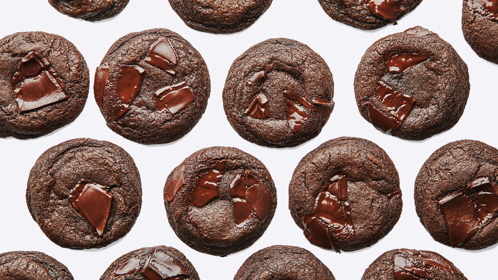

|  |
Here some awesome facts about chocolate cookies!
|
Here's the cookie to bake when you want to impress your friends at the cookie swap but you're not about to spend hours cutting out reindeers and piping royal icing. The big puddles of chocolate offer drama—and tell the tale of the super chocolatey, gooey insides. The best part is that there's no real planning ahead necessary: After just one hour of resting, these cookies are ready for the oven.